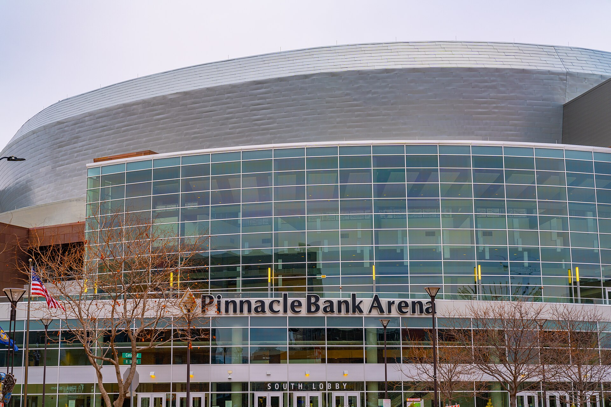
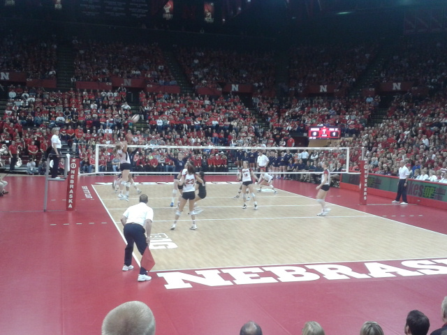
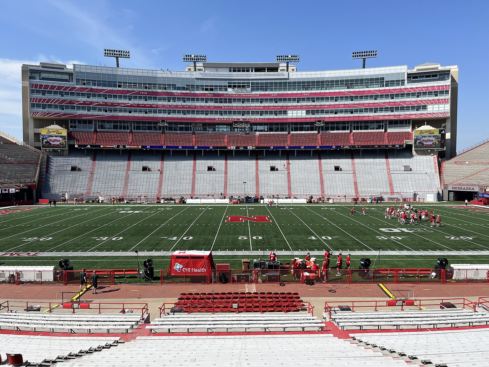
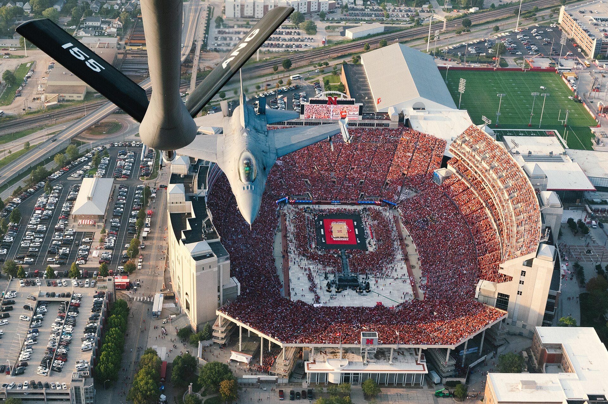

Men’s basketball · Lincoln
Iowa and Michigan both come home. The Sweet 16 hangover has a schedule now.
First tournament win, first Sweet 16, then a 77–71 loss to Iowa. The rematch is at Pinnacle Bank Arena. So is defending champ Michigan. Dates for those Big Ten nights are still TBA — the announced nonconference slate starts Oct. 16 at BYU.

Roster
Sandfort back, Kapke in, the frontcourt is the story
Returning All-Big Ten forward plus a Boston College transfer. Full board on the basketball page.

How to watch
No MBB channel yet. Football is BTN tonight if you need a set.
Affiliate row in the rail — not a signup modal.

Neutral sites
Providence, Boise State, Butler, then Creighton in Omaha
Hall of Fame Tip-Off through the rivalry week. TV TBA.
Nebrasketball.com is an independent, unofficial fan site and affiliate aggregator. We are not affiliated with, endorsed by, or connected to the University of Nebraska–Lincoln, its athletic department, or any official licensing program. Photo: Tony Webster / CC BY 2.0 (arena); other images credited on the live site. Football and volleyball are rail/demoted. Watch links may be affiliates.